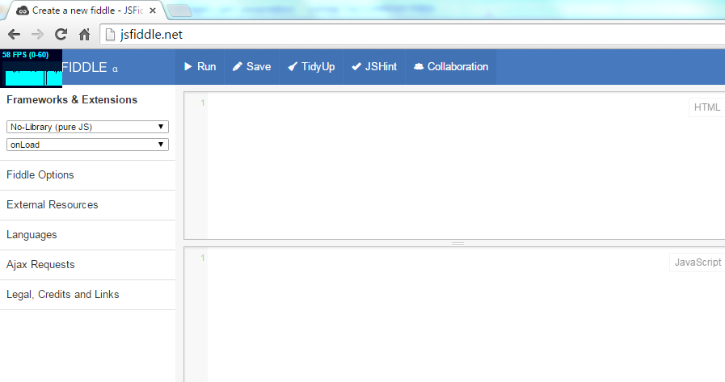
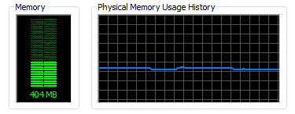
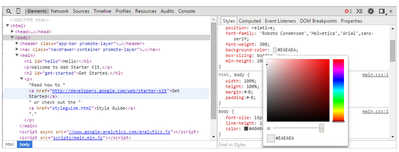
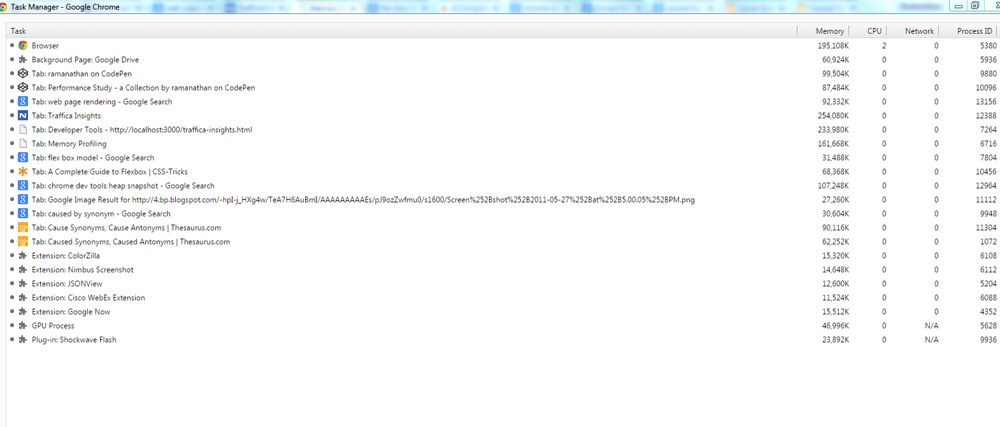
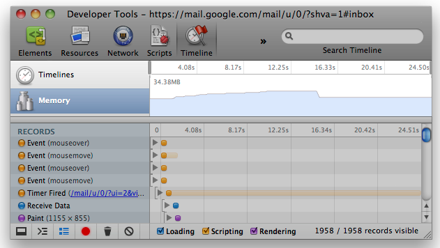
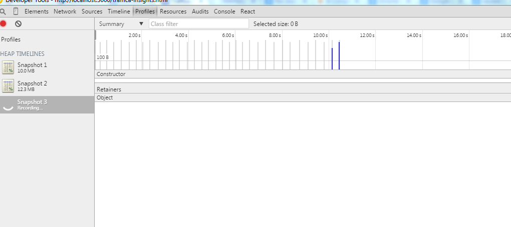

Ensures that the application is optimized for higher frame rate and lower memory footprints making the users more engaged.
Ensures that the application is optimized for higher frame rate and lower memory footprints making the users more engaged.
Frame rate is the rate at which a device produces consecutive images to the screen
Stats JS helps us to monitor the frame rate. Refer the below snapshot's top left corner.
Memory footprint refers to the amount of main memory that a program uses or references while running
Chrome Dev tools are a set of web authoring and debugging tools built into Google Chrome browser
1. Open chrome task manager (Shift+Esc) and keep a watch on the memory consumed by the application
2. Use Chrome's memory timeline to confirm your assumptions
3. Use Chrome's Allocation Profiler to take heap snapshots to pinpoint the areas causing leak. This is more advanced than Chrome's Heap Snapshot recording
This is a sample code showing how closures lead to memory leak, if not used wisely
See the Pen Memory leak example by ramanathan (@ramanathanMuthuraman) on CodePen.
This is a sample code showing how DOMs lead to memory leak, if not used wisely
See the Pen DOM memory leak example by ramanathan (@ramanathanMuthuraman) on CodePen.